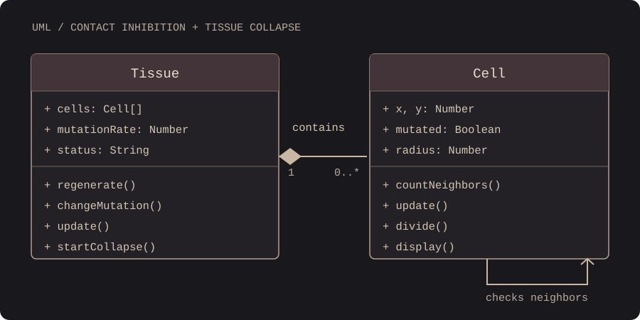

Mutating Bodies
If the embedded sketch does not load, open the local backup.
The tissue grows on its own. Use the buttons beneath the sketch to change the environment—not individual cells. Click Enable Sound: one short note marks each spontaneous mutation, and the underlying pulse speeds up as the mutated population grows. As the tissue becomes dominated by mutations, pressure on healthy cells rises; when every cell has mutated, the tissue collapses and the experiment ends. Regenerate Tissue starts another experiment at the same mutation probability.
When Cells Disobey
This project explores how a simple biological rule can create complex and unpredictable forms. The system is inspired by contact inhibition: normal cells reduce or stop division when their local environment becomes crowded. In this simplified model, some cells randomly mutate and lose that restriction.
Rather than designing a final body shape, I designed relationships between cells. Each cell senses its nearby neighbors, decides whether it can divide, and makes room for new cells through local pressure. Over time, this can produce clusters, irregular edges, and uncontrolled growth.
The work asks: What happens to a collective body when some of its parts stop following a shared rule?
Objects and Relationships

Tissue contains many Cell objects. Each Cell checks nearby Cell objects, may mutate, and may divide. Tissue manages the environmental mutation rate and physical separation.
Local Rules → Collective Change
- Contact inhibition. A normal cell may divide only if it has fewer than four nearby neighbors.
- Spontaneous mutation. Every healthy cell has a chance of becoming mutated in each growth step. Near total mutation, simulated tissue stress increases that probability so the final healthy cells do not remain indefinitely.
- Loss of inhibition. A mutated cell can divide even when crowded, and its offspring inherit that state.
- Physical pressure. Neighboring cells push apart when they overlap. This changes the shape of the whole tissue.
- Mutation sound. Each spontaneous mutation triggers a brief note. As the total mutated population increases, the background pulse becomes faster.
- Terminal state. Once no healthy cells remain, cell division stops, the membrane dissolves, and the simulation enters Tissue Collapse. Only Regenerate Tissue restarts the experiment.
This is an artistic simulation of density-dependent growth, not a scientifically predictive model of cancer or tissue biology. Final-stage mutation pressure and collapse are artistic rules.
Process
I first considered a more complex system with immune cells and several types of interactions. I simplified the project to focus on one biological principle: contact inhibition.
I then created two classes, Cell and Tissue. The Cell class stores each cell's position and mutation state and handles local decisions. The Tissue class manages the population, environmental settings, and crowding forces. Finally, I added mouse-clickable buttons to change the mutation probability or regenerate the tissue. I also added a terminal state and generated sound effects tied to the spontaneous mutation count and the fraction of mutated cells. A final-stage pressure rule helps the simulation reach its ending. Once every cell has mutated, the tissue loses its connections, collapses, and shows an experiment summary; users can regenerate a new tissue.
Emergence
The system has no predefined tissue shape, but it has a clear terminal rule. All healthy cells disappearing triggers Tissue Collapse. The system has no predefined final image. Every cell makes simple local decisions, but their collective behavior creates a changing organic structure. The result depends on the timing and location of random mutations, crowding, and the user's environmental settings.
The contrast between individual behavior and collective form is the central experiment: a body has no single plan, yet its parts continuously shape one another.